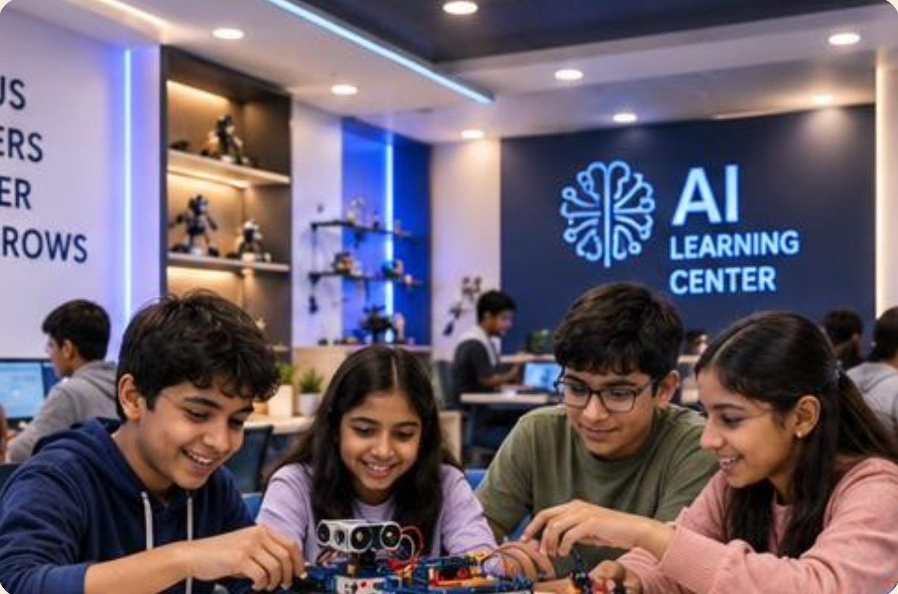
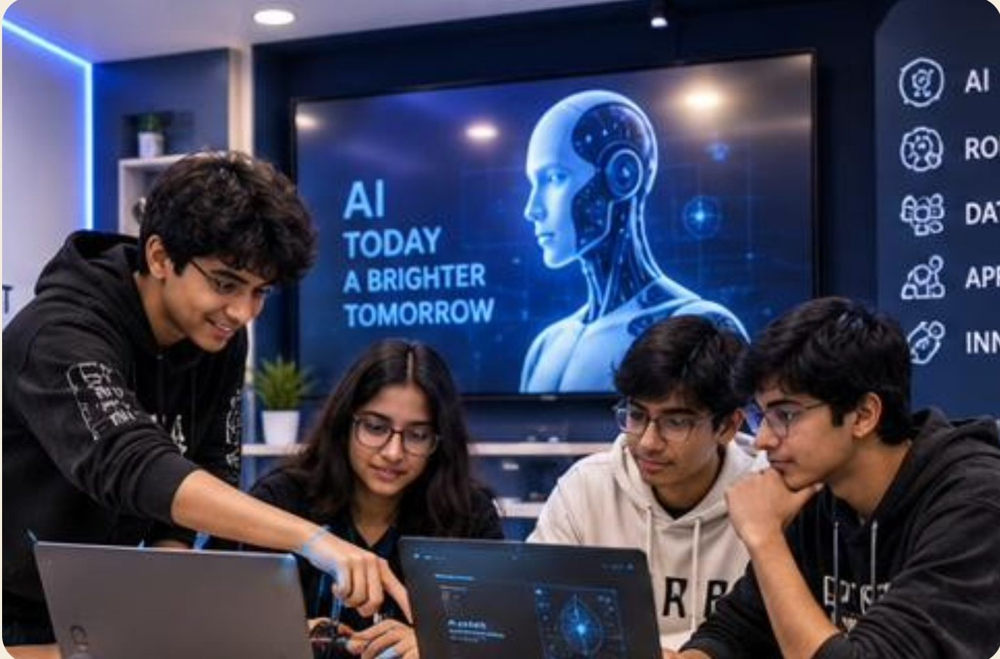

AI & machine learning specialists
Building the systems now reshaping every other industry.
Hands-on AI, robotics and innovation programmes for Grades 6–12. Every programme ends in something built, documented and demonstrated in public.
Ignite Innovation. Inspire Futures.
Part I · The learner
The work they will do is still being invented. Knowledge has become cheap to find and expensive to apply.
The evidence
The world gains jobs overall, but they are different jobs needing different skills, and today's schoolchildren are the ones who will fill them.
Source: World Economic Forum, Future of Jobs Report 2025 (1,000+ employers, 14M+ workers, 55 economies)
The IMF's assessment
In emerging economies such as India, about 40% of jobs are exposed; in advanced economies, about 60%. Roughly half of exposed jobs may gain from AI. For the rest, AI may take over key tasks.
The deciding factor: who knows how to work with it.
Source: International Monetary Fund analysis, Kristalina Georgieva, January 2024
What is growing
Building the systems now reshaping every other industry.
Turning raw information into decisions organisations act on.
Machines that sense, decide and move, in factories, farms and hospitals.
Still among the largest and fastest-growing job categories.
Where money meets software, at national scale.
Because everything above has to be defended.
They all rest on the same foundation: code, data, electronics, and the confidence to build.
Source: World Economic Forum, Future of Jobs Report 2025
What Google's own research found
Exactly what a machine still cannot do on its own.
That is why every STEAM-IE programme ends in something built, documented and demonstrated in public, not a certificate of attendance.
Source: Google for Education & Canvas8, Future of Education Part 1 (2022), citing the WEF Future of Jobs Report
Part II · India has already decided
AI becomes a CBSE skill subject from Class 9 (Codes 417 and 843).
Puts computational thinking and experiential, hands-on learning at the centre of school.
50,000 Atal Tinkering Labs in government schools and a ₹500 crore AI Centre of Excellence for education.
Ministry of Education announces AI and computational thinking from Class 3, from 2026–27.
CBSE launches its CT & AI curriculum for Classes 3–8 this academic session.
AI is no longer an extra-curricular. It is becoming the curriculum.
Part of the regular CBSE curriculum from 2026–27: logical reasoning, problem-solving and AI in daily life. Classes 6–8 add foundational AI concepts.
An optional CBSE skill subject. 100 marks, split 50 theory and 50 practical: data, Python basics and computer vision.
A deeper elective built around a team capstone project. Half of the marks are earned in the lab.
Children should “not remain mere consumers of technology but emerge as responsible creators.”
Jayant Chaudhary, Minister of State for Education, at the CBSE curriculum launch, April 2026
Sources: CBSE; PIB, Union Budget 2025-26; Ministry of Education (Oct 2025); Ministry of Education & CBSE launch (1 Apr 2026); CBSE skill subject scheme, Artificial Intelligence 417 / 843
Part III · From job seekers to job creators
India is the world's third-largest startup ecosystem.
Every STEAM-IE programme ends in a public pitch. Grades 9–12 build a business concept and lean canvas for their capstone.
Sources: Ministry of Commerce & Industry (DPIIT), April 2026; Startup India
Part IV · How we teach
The skill isn't coding. It's knowing what to do when something doesn't work.
What is the problem, really? Sketch first.
Hands on hardware from minute one.
Does it work, repeatedly, for someone else?
Change one thing. Try again.
What it does, what broke, what's next.
Instructors answer questions with questions. It is slower in week one and much faster by week ten.
Our programmes
Leaves with an autonomous robot and an IoT device
Leaves with 2–3 portfolio projects on GitHub
Fees exclusive of GST · Contact hours = 12 weeks × 2 weekend sessions
Curriculum

Grades 6–8 · Future Skills Foundation
Ages 11–14. No prior coding needed, just comfort with a laptop and curiosity about how things work.
12 weeks · 36 hours
Image classifier trained on own photos
Flowchart for a real-life process
Interactive animated story
Quiz game and first Python script
Cardboard prototype with user feedback
Smart traffic light
Live weather station
Programmable motorised chassis
Autonomous obstacle-avoider robot
Smart plant monitor with phone alerts
Printed keychain and device enclosure
Smart Home capstone and Demo Day pitch
Two weekend sessions of 1.5 hours each, every week · Tools: Arduino Uno, ESP32, Scratch, Python, Tinkercad, Teachable Machine

Grades 9–12 · AI & Technology Career Accelerator
Ages 14–18. Prior coding helps but isn't required. Personal laptop recommended; loaners available.
12 weeks · 48 hours
Command-line marks analyser
Data-cleaning notebook on GitHub
Dataset bias and quality audit
Domain chatbot built on an LLM
Sales prediction model
Checkpoint 1: fully evaluated classifier
Gesture-controlled robot
Smart home or plant monitor
Checkpoint 2: AI vision obstacle avoider
Prototype with 3D-printed enclosure
Lean canvas and business concept
2–3 portfolio projects and a live pitch
Two weekend sessions of 2 hours each, every week · Checkpoints in weeks 6 and 9 reviewed by an industry mentor
Inside a session
The same rhythm every time, so children stop waiting to be told what comes next.
What your child will build
Ultrasonic sensing and decision logic driving a 4WD chassis on its own.
Soil moisture sensing with alerts sent to a phone over Wi-Fi.
Timed signals with a pedestrian request button.
Lights, fan, door and alarm automated on a scale house.
A domain-specific assistant built on a language-model API.
Hand landmarks from a camera mapped to robot movement.
Camera-guided navigation with an ultrasonic fallback.
Regression with feature engineering and error analysis.
Materials are included. Kits, components and 3D printing are covered by the programme fee.
Peace of mind
Screens are a tool here, not the activity. Younger children typically spend under 30 minutes of a session at a screen. No games, reward loops or leaderboards: the build holds attention.
How you'll see progress
Completes tasks with continuous guidance
Completes tasks with occasional guidance
Works independently and debugs own work
Extends beyond the brief and helps peers
Certificate of Achievement: Level 3 on 70% of modules plus a demonstrated capstone
Please read this one
We won't improve this term's marks, and we won't claim to. If marks are the immediate problem, a good tutor is a better use of your money.
It may make your child a more interesting applicant. It will not make them a faster one.
Nobody can promise that. We promise evidence of capability that did not exist twelve weeks earlier.
Some are not ready; some are ready for the rung above. We would rather tell you than take the fee.
The other half
Twelve weeks with us is 36 to 48 hours. Your child is awake for well over a thousand in that time. What happens in those hours matters more.
Swap “what did you learn today?” for “show me”. It changes the answer.
A project left on the table gets picked up again. One in a cupboard doesn't.
Attendance is the strongest predictor of how far a child gets.
The most valuable minutes are when your child is stuck and nobody rescues them.
Children present differently when a parent is in the room.
If the batch, pace or pairing isn't working, say so in week two, not week eleven.
Who stands behind this
Founder & CEO
STEAM-IE Adventures Pvt. Ltd.
Fees & enrolment
₹18,000
About ₹1,500 per week
Book a demo₹24,000
About ₹2,000 per week
Book a demoAll fees exclusive of GST · 50% refund before the third session · 75% attendance required for certification
Next step
Bring your child to a free 90-minute demo workshop. They build a working robot in the lab. You watch from the back. Then decide.
Use the form below or ask at the desk. Four slots every weekend, fifteen children each.
Parents stay in the room. Every child leaves having built something that worked.
No pressure in the room. Ask us when the next cohort starts.
Ignite Innovation. Inspire Futures.